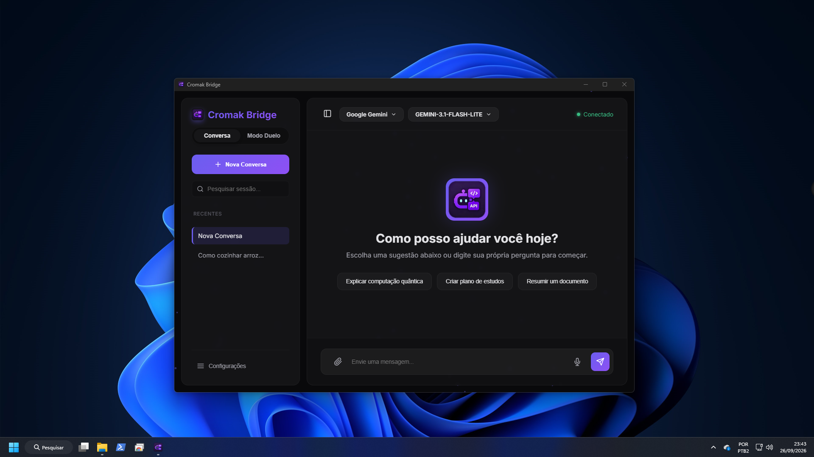
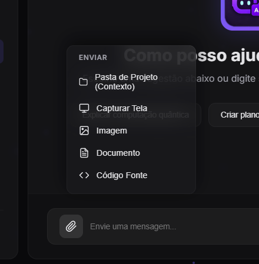
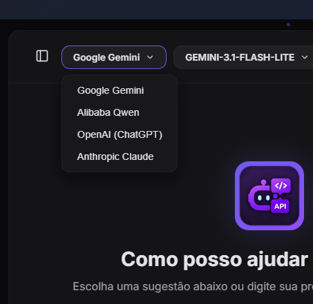
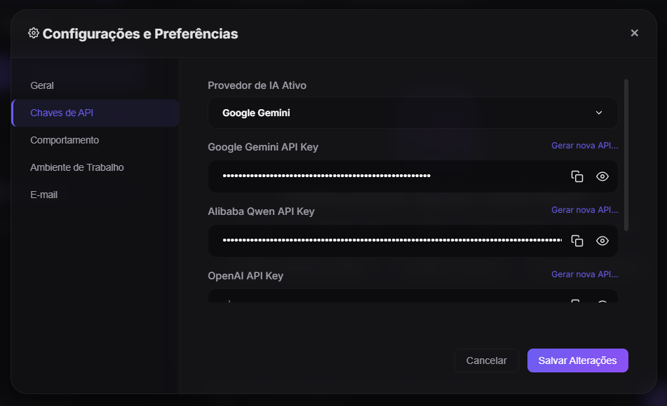
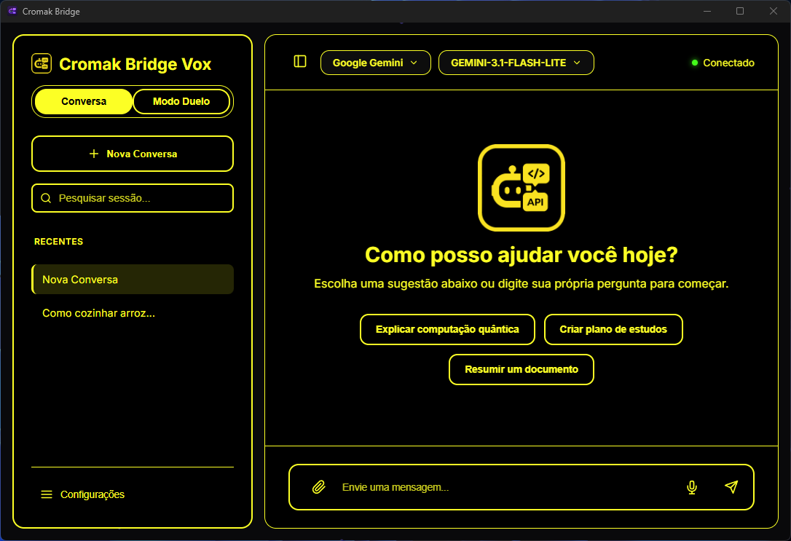
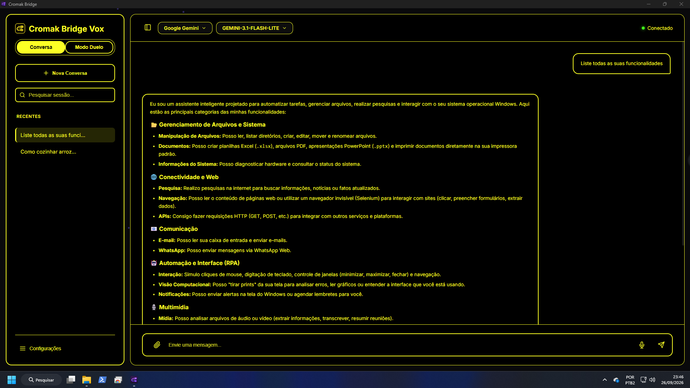
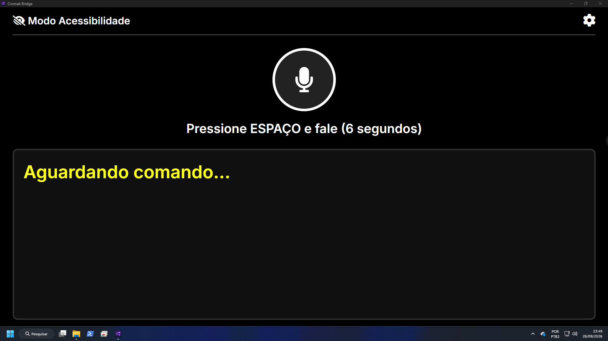

Cromak Bridge Vox
The Smart Engine for your desktop, focused on accessibility.
Version: 1.0 BETA (build 2026.09)
Technology only reaches its true potential when it leaves no one behind. Accessibility is not an "add-on feature"; it is the foundation. The future of AI must be accessible to everyone.

AI that Accesses Your System
Unlike a simple browser-based chat, Bridge Vox functions as a "Machine Agent" integrated into Windows. It was designed as a modern evolution of classic accessibility projects, but is now powered directly by the most advanced APIs on the market (Google Gemini, OpenAI, Claude).
🤖 Intelligent Auto-Coder
The Agent Mode allows the Artificial Intelligence to execute scripts, alter, create, and delete files and folders on your local system. A programmer and assistant living in your PC.
👁️ Extreme Accessibility
Developed as a spiritual successor to Dosvox. High Contrast modes for Low Vision and Vox Mode (Microphone Only) for 100% non-visual and auditory navigation.
🔑 BYOK Architecture
Bring your own key. Connect directly to the world's most powerful APIs (Google Gemini, OpenAI, Claude, Qwen). No subscriptions or middlemen from Cromak.
Interface Overview
Click on the images to expand and see the app details.
Main Interface
Modern and focused visual. Chat with the Artificial Intelligence directly from your desktop without browser distractions.

Multimodal & Attachments
Attach images, spreadsheets, or code blocks with ease. Bridge reads the entire context and works upon your files.

Instant AI Switching
Need another perspective? Switch between Gemini, ChatGPT (OpenAI), Claude, or Qwen instantly with a single click.

Total Control
Complete native menu. Access all your preferences, providers, and API keys in a totally offline and secure environment.

High Contrast
Designed for people with Low Vision. 100% black backgrounds, bright yellow borders and texts, eliminating visual pollution.

Autonomous Execution
The Agent doesn't just chat, it acts. It can list its own capabilities, write reports, and automate your computer locally.

Microphone Only Mode
Designed for total blindness. The interface disappears in favor of 100% verbal communication, operated exclusively by the keyboard.
What can Bridge do for you?
Far more than just a simple chat in a browser tab. Cromak Bridge is a true "Machine Agent" capable of interacting with, reading, and managing your computer by operating advanced tools in the background.
Our Mission: Why did we create Bridge?
We believe the future of Artificial Intelligence shouldn't be a luxury locked behind expensive $20 monthly subscriptions, nor an exclusive technology. Bridge was born from a deep desire to democratize access to the world's most advanced technology—putting the power of AI into the hands of schools, institutions, and, above all, people with visual impairments (low vision and total blindness). The computer should adapt to the human, not the other way around. That is why Bridge listens, speaks, sees your screen, and executes commands, acting as the eyes and hands for those who need them.
📁 File and System Management
- Manipulation: Reads, edits, renames, moves, and lists local files and folders.
- Databases: Performs read queries on SQLite databases.
- Diagnostics: Reads hardware and operating system information.
⚙️ Automation and Interface (RPA)
- Hardware/Software: Controls volume, locks screen, manages windows (maximize, minimize).
- Simulation: Able to simulate mouse clicks and keyboard typing.
- Notifications: Creates reminders and sends native Windows notifications.
🌐 Internet and Communication
- Ghost Navigation: Interacts with complex websites without opening Chrome (fills forms and clicks).
- Direct Communication: Reads inboxes, sends Emails and WhatsApp Web messages.
- External APIs: Makes HTTP requests to query real-world data.
📊 Multimedia, Productivity & Vision
- Documents & Media: Creates spreadsheets (Excel) and PDFs. Plays music, radios, or downloads from YouTube.
- Screen Analysis: Takes screenshots of your own screen to analyze charts or interface errors.
- Memory: The Agent Remembers preferences and rules between conversations.
Privacy and Local-First
-
No Middlemen Servers
Cromak Technology does not act as an interceptor. Your messages and files leave your PC and go DIRECTLY to OpenAI or Google via your API Key.
-
Local Audio Processing
Shielded microphone capture (Walkie-Talkie via keyboard button). Audio is recorded natively, without browser glitches, generating extreme responsiveness.
-
Global Hotkeys
Invoke the AI at any time while using other programs. Press F1 for Contextual Help or F2 to quickly record voice.
⚠️ Auto-Coder Warning
Bridge has read and write permissions on your local disk if "Agent Mode" is activated. Use at your own risk. We are not responsible for deleted files or unwanted scripts executed at the user's request.
AI Functions Table
Bridge features advanced built-in tools (Auto-Coder). Here's how to test some of them:
| Skill Description | Command Example (What to say/type) |
|---|---|
| Read local files (TXT, PDF, etc.) | "Read the report.pdf file on my Desktop and summarize it." |
| Create Spreadsheets and Documents | "Create an Excel spreadsheet in Downloads named Expenses with 3 fictitious costs." |
| Web Navigation (Ghost Browser) | "Access the Wikipedia site about Python and extract the page summary." |
| RPA (Simulate Mouse and Keyboard) | "Press the 'win' key, type 'calculator' and press Enter to open the app." |
| Computer Vision | "Take a screenshot of my screen right now and describe the error I'm seeing." |
| Automatic WhatsApp Web | "Send 'Hello, this is a test' to my number on WhatsApp." |
| Windows Window Management | "Minimize all open windows to show my Desktop." |
| Hardware Control | "Lower the volume a bit." or "Turn on my webcam silently and take a photo." |
| Reminders and Notifications (Pop-up) | "Send me a Windows notification in 5 minutes reminding me to drink water." |
| Long-Term Memory | "Remember that my favorite color is blue." (On another day: "What do you know about me?") |
System Compatibility
Compiled independently (Stand-Alone). Does not require the installation of Python, libraries, or complex dependencies on your machine. The software is extremely lightweight and optimized. Recommended requirements: Minimum 8GB RAM and Core i3 processor (or equivalent).
Note: At the moment, the interface and voice recognition are exclusively available in Brazilian Portuguese (PT-BR).
Download the BETA version of the software
Cromak Bridge Vox is and always will be a 100% free and ad-free project. We built this tool not to profit from subscriptions, but to break down accessibility and technological barriers. Keeping this software updated, paying hosting costs, and developing new accessibility integrations for those who truly need them requires time and resources. If this software changed your routine or your company's, please consider becoming a sponsor. Your contribution is what keeps the wheels turning and allows us to continue impacting lives through open code.
Personal Use (Freeware)
- Full Software
- All Modes (Standard/Vox)
- Auto-Coder & Local Agent
- Total Privacy
- No Dedicated Support
Project Supporter
- Donate the amount you wish:
- Helps with the continuous improvement of the software.
- Helps with Windows integrations
- Supports Accessibility tools
🔒 Proudly distributed by Cromak Technology.